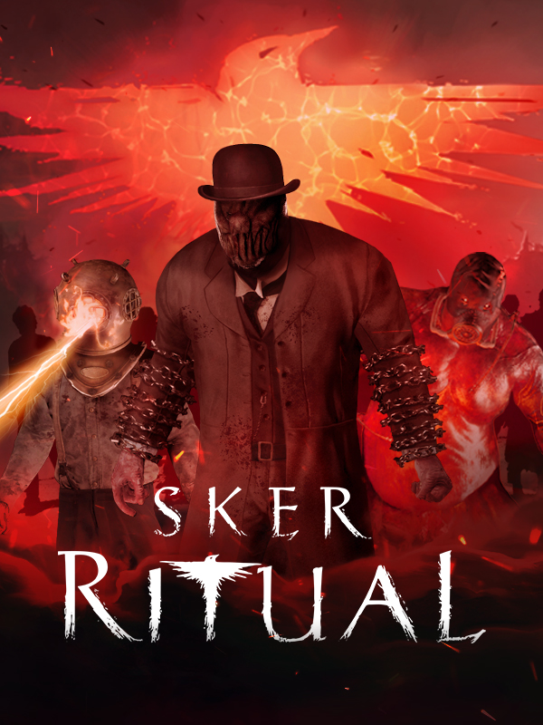

Sker Ritual
Sker Ritual
Details
|  | |
| Playtime | Not Played |
| Last Activity | Never |
| Added | 26/06/2025 0:04:03 |
| Modified | 26/06/2025 0:05:23 |
| Completion Status | Not Played |
| Library | Steam |
| Source | Steam |
| Platform | |
| Release Date | 18/04/2024 |
| Community Score | |
| Critic Score | 60 |
| User Score | |
| Genre | Indie Shooter |
| Developer | Wales Interactive |
| Publisher | Wales Interactive |
| Feature | Co-Operative Multiplayer Single Player |
| Links | Steam Official YouTube Twitch Discord Epic Uknown Uknown |
| Tag | |
Description
An intense, round-based, zombie horror shooter by indie developers at Wales Interactive. Play solo or up-to 4-players online, facing relentless waves of Quiet Ones whilst solving mysterious missions, uncovering Easter Eggs, upgrading steampunk weapons and obtaining Miracles — a vast network of Celtic God powers.
It’s 1914, and Elisabeth Williams has conquered Sker Island, now seeking domination with a broadcast of the Siren’s Song. Arianwen, her daughter, has opposed her, and after being mysteriously awakened, you must join her mission to thwart the broadcast and save the world from descending into hell. Sker Ritual is not a direct sequel, but an FPS spin-off from the award-winning British indie horror game, Maid of Sker!
• Old-school round-based FPS action
• Play solo or up-to 4-players online
• Story continued from Maid of Sker ‘evil’ ending
• Optional objectives & hidden Easter Eggs
• Supercharged ‘Elites’ with unique abilities
• Collect and enhance 'Miracle' powers
• Explore free reward systems ‘Dread Levels’ and ‘Sker Pass’


It’s 1914, and Elisabeth Williams has conquered Sker Island, now seeking domination with a broadcast of the Siren’s Song. Arianwen, her daughter, has opposed her, and after being mysteriously awakened, you must join her mission to thwart the broadcast and save the world from descending into hell. Sker Ritual is not a direct sequel, but an FPS spin-off from the award-winning British indie horror game, Maid of Sker!
• Old-school round-based FPS action
• Play solo or up-to 4-players online
• Story continued from Maid of Sker ‘evil’ ending
• Optional objectives & hidden Easter Eggs
• Supercharged ‘Elites’ with unique abilities
• Collect and enhance 'Miracle' powers
• Explore free reward systems ‘Dread Levels’ and ‘Sker Pass’
TEAM TACTICS OR SHOOT SOLO?
Designed for playing solo, or up-to 4-players online. Short of a teammate? No worries, the intensity of Sker Island’s hordes scale to the number of players. You could always find-a-friend over on the official .SKER ENEMIES
The Quiet Ones have returned and they are not alone. Sker Island has recruited new elites, each with a unique set of abilities that will force you to change-up your playstyle, change your location, or enlist the help of your teammates! Old enemies aren't the only ones to curse the lands of Sker, we have many more new faces — even some without faces — that want to destroy you.IT'S A MIRACLE
Killing enemies offer a chance to drop powerful Miracles. Look out for these, you’ll need them. A Miracle drop offers a choice of three random upgradable powers that buff or alter your shooting, melee, grenade and healing. A fifth slot is reserved for your Ultimate, a chargeable powerful action to save up for those sticky situations. Each Miracle is bound to a Celtic God and come in many forms including rarity, core attributes and power.MASKS, QUIPS AND MORE
Collect and induce fear on Sker’s inhabitants with interchangeable masks inspired by all forms of horror; folk, gothic, zombie, science fiction to the supernatural and more. Taunt your teammates with unique voice lines and switch out your dynamic menu scene environments from the Island.THE LAUGHING POLICEMAN
Get your guns, ammo, and more at The Laughing Policeman’s booth at locations around the maps. Buy stock munitions or gamble on a randomly picked weapon with a chance of gaining a higher base level. Climb the weapon ranks with unique upgrades courtesy of The Laughing Policeman’s SUPER CHARGER for bonus buffs and visible steam-punk inspired enhancements.